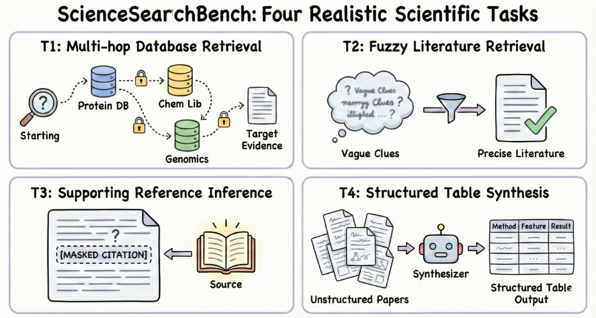
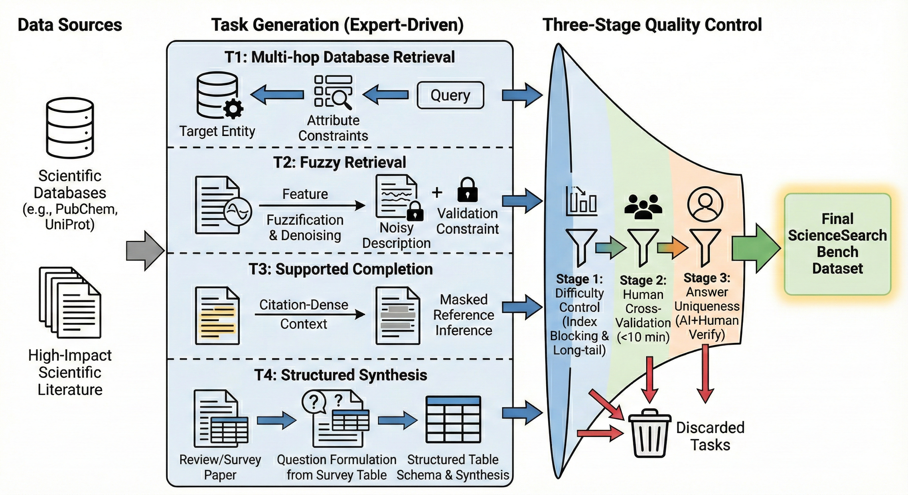
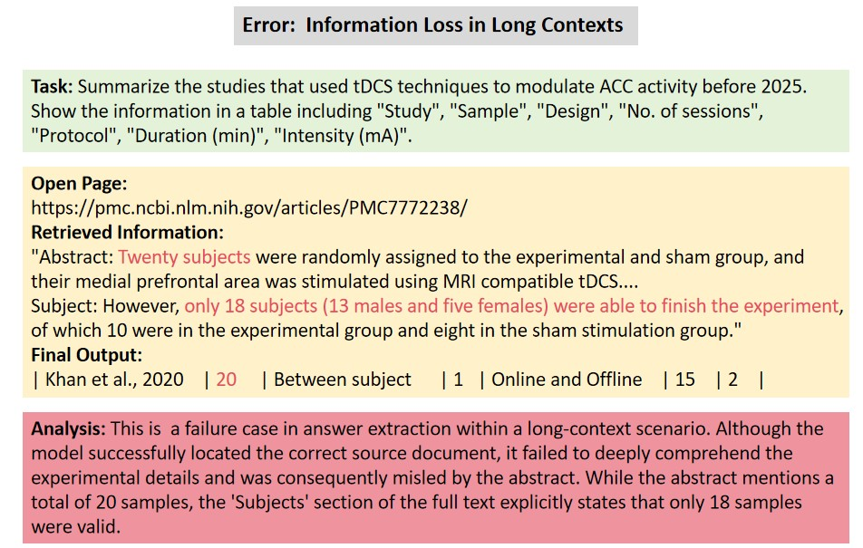

Scientific Database Navigation
输入：由多层属性约束组成的实体谜题，显式 ID 被删除。
要做：跨数据库记录逐步反推实体，进行识别、过滤、消歧和多约束导航。
输出：目标实体或精确属性。
Evaluating Autonomous Agents from Scientific Navigation to Information Integration
一句话：SciExplore 不是新的 Literature Agent，而是一套专门检查“科研 Agent 到底会不会找、核、引、整合信息”的 benchmark。
它把能力拆成一条递进链：数据库实体导航 → 模糊条件找论文 → 给论断补引用 → 跨论文生成严格表格。最有价值之处，是把 Literature Evaluation 从“报告写得像不像”推进到“证据是否找对、引用是否对应、结构是否完整”。
全部由领域专家人工构造，T1–T4 分别为 39 / 32 / 14 / 18。
覆盖 PubChem、Open Targets、ChEMBL、UniProt、Materials Project、GWAS 等专业数据库。
论文报告 OpenAI Deep Research 最佳，但 Overall 的公开公式无法复算该数字。
最佳 item recall 30.14%，完整 row recall 只有 18.59%。
它和 DeepResearchBench 的关键区别：后者偏向评估长报告的完整性与写作质量；SciExplore 更关心细粒度 evidence grounding 和可被程序消费的结构化产物。它更接近“科研信息工作的单元测试”。
论文认为，真实的科研信息工作不是一次问答，而是从定位实体逐渐升级为定位论文、绑定证据、建立领域级结构。四项任务对应四个认知层级。

边界：这是信息检索与整合 benchmark，不评测 idea novelty、实验设计质量、代码执行、实验结果真实性或论文写作全流程。因此它可以评估 InternAgent / FlowSearch 的 Literature 能力，却不能单独代表“自主科研能力”。
输入：由多层属性约束组成的实体谜题，显式 ID 被删除。
要做：跨数据库记录逐步反推实体，进行识别、过滤、消歧和多约束导航。
输出：目标实体或精确属性。
输入：被去特征、模糊化且带噪声的方法或概念描述。
要做：扩大候选搜索空间，再用不能直接帮助检索的 venue、作者等约束验证唯一答案。
输出：指定的关键论文。
输入：引用密集段落，但若干 citation slots 被移除，正文也经过改写以降低关键词重叠。
要做：抽象 claim，检索支持证据，验证论断与论文是否真正匹配。
输出：按引用槽分组的参考文献。
输入：预定义比较 schema，以及需要跨多篇论文收集的研究主题。
要做：找齐主实体，抽取分散在全文中的属性，规范不同术语和单位。
输出：列名和格式严格固定的 Markdown 比较表。
“递进”不等于每道题都逐级依赖：T1–T4 是四个独立任务族，不是一条题目必须依次完成的执行流水线；所谓层级主要描述能力抽象程度。

| 任务 | 构题策略 | 防止的捷径 | 答案唯一性来源 |
|---|---|---|---|
| T1 | Reverse Trajectory：从已知唯一实体出发，把直接标识逐层替换成相关实体属性 | 直接搜 ID 或唯一字符串 | 从确定目标反向生成约束链 |
| T2 | Feature Denoising & Fuzzification：弱化方法名和关键词 | 标题或摘要表层匹配 | 注入只能用于事后确认的 venue / author 等约束 |
| T3 | 选择 citation-dense 段落，改写上下文并排除过于经典或综述式引用 | 按原句搜索或靠经典论文记忆 | 原始论文的 citation slots 与人工验证 |
| T4 | 从综述比较表抽取 schema，再回到代表性原始论文构造信息需求 | 只复述单篇摘要或输出自由报告 | 专家表格、指定主键与固定字段 |
移除显式索引，优先使用长尾实体，使任务不能被一次关键词命中。
标注者独立使用搜索引擎求解；论文称 10 分钟内无法解决的题才保留。
搜索型 LLM 先提出候选，人工再检查是否存在同样满足约束的替代答案。
优点：构题不是模板自动合成，而是专家从真实数据库、论文引用和综述表格出发；这使题目更接近科研人员真实遇到的“信息不完整、来源异构、格式严格”的工作。
| 任务 | Judge / 单元 | 主要指标 | 关键含义 |
|---|---|---|---|
| T1 / T2 | Judge LLM 比较最终答案和 gold；允许不改变语义的表面差异 | F_em | 多部分答案必须全部正确；错误、未作答分开计数。 |
| T3 | 按 citation slot 分组；Judge 检查核心论文和作者 / venue / 年份 | 组内 P、R、F1；跨组平均 | 既惩罚遗漏引用，也惩罚多给错误引用。 |
| T4 item | 先匹配首列主键，再逐 cell 让 Judge 判断 | Item Recall | 衡量找对多少实体和属性，允许局部正确。 |
| T4 row | 一整行主键及全部属性同时正确 | Row Recall | 衡量能否得到完整、内部一致、可直接使用的结构化记录。 |
T4 留下了一个未定义点：论文同时报告 item recall 与 row recall，却没有明确 Overall 中的 Score_T4 究竟是哪一个或如何组合。更重要的是，无论代入 item 还是 row，都复算不出主表的 Overall，详见后面的审计。
论文比较三种范式：无工具的基础模型、带通用搜索工具的模型、专用 Deep Research Agent。主表实际列出 13 个运行配置。
| 系统 | 范式 | T1 | T2 | T3 | T4 Item | T4 Row | Overall* |
|---|---|---|---|---|---|---|---|
| Foundation LLMs | |||||||
| DeepSeek-V3.2 | Open | 20.51 | 6.25 | 5.95 | 8.32 | 2.25 | 11.06 |
| Qwen2.5-72B-Instruct | Open | 7.69 | 0.00 | 0.00 | 8.63 | 6.94 | 4.99 |
| Qwen3-30B-A3B-Thinking | Open | 10.26 | 0.00 | 3.57 | 2.54 | 1.60 | 4.50 |
| Qwen3-235B-A22B-Thinking | Open | 20.51 | 3.12 | 0.00 | 7.85 | 4.15 | 7.87 |
| GPT-5.1 | Closed | 17.95 | 9.38 | 9.66 | 8.76 | 4.83 | 12.83 |
| Gemini-2.5-Pro | Closed | 20.51 | 6.25 | 4.17 | 10.57 | 3.78 | 11.25 |
| Gemini-3-Pro | Closed | 23.08 | 12.50 | 13.69 | 16.23 | 7.29 | 19.08 |
| LLMs with Search Tools | |||||||
| DeepSeek-V3.2 w/ search | Open | 17.95 | 9.38 | 9.66 | 9.20 | 3.95 | 11.12 |
| GPT-5.1 w/ search | Closed | 15.38 | 34.38 | 20.85 | 12.13 | 5.12 | 21.61 |
| Gemini-3-Pro w/ search | Closed | 33.33 | 53.12 | 49.40 | 23.53 | 11.49 | 46.46 |
| Deep Research Agents | |||||||
| Tongyi-DeepResearch-30B-A3B | Open | 43.59 | 50.00 | 34.40 | 11.12 | 4.26 | 36.93 |
| Gemini Deep Research | Closed | 35.90 | 56.25 | 36.56 | 15.61 | 7.35 | 39.30 |
| OpenAI Deep Research | Closed | 23.08 | 43.75 | 59.91 | 30.14 | 18.59 | 49.39 |
Tongyi DR 最擅长 T1 数据库导航；Gemini DR 在 T2 模糊找论文最高；OpenAI DR 在 T3 引用恢复和 T4 结构化综合领先。
更频繁的搜索与更高分相关，但搜索也可能强化先入为主的错误假设。关键不只是“有搜索”，还包括重规划、反证和覆盖控制。
T1 从 2-hop 到 6-hop 并未呈稳定下降；Agent 往往不是沿人工设计的链逐步导航，而是先猜答案再检索验证。
最佳系统能填对 30.14% 的 cell，但完整行只有 18.59%。找到零散事实不等于形成一致、完备的领域结构。
首轮没有直接语义匹配，就把“暂时没找到”误判成“不存在”，没有换同义词、换数据库或反向交叉检索。
为了让候选满足用户约束，虚构参考文献数量、图中光谱数或不存在的蛋白构建体。
摘要写 20 位受试者，正文结果说明实际完成 18 位；模型仍提取了摘要中的旧数字。
要求五列表格，模型擅自简化为三列。内容看起来通顺，但无法进入下游解析和自动审计。
先根据“疼痛通道”猜 SCN10A；检索发现长度矛盾后仍不放弃，反而事后编造 604 aa 构建体。
T4 即使格式正确，若核心实体没有被搜全，后续属性抽取再准确也无法补回缺失行。

对 Literature Agent 最直接的启示：必须把检索、约束检查、全文证据定位、冲突消解和 schema validation 分成显式步骤；仅让同一个 LLM “边搜边写”很难稳定避免这些错误。
以下区分作者明确披露的限制与本地核对 TeX / 公式后的审计发现。
arXiv、ACL、TeX、GitHub 和 Hugging Face 均没有官方 artifact。103 道题、gold、运行脚本、Judge 调用和解析器无法独立复现。当前只能复现论文阅读，不能复现实验。
以 OpenAI Deep Research 为例：若 T4 取 item recall，公开权重得到 0.2×23.08 + 0.2×43.75 + 0.3×59.91 + 0.3×30.14 = 40.38；若取 row recall则是 36.92，都不是论文报告的 49.39。论文也没有说明 T4 的隐藏组合方式。
F_em = 2C/(2C+2I+N) 中，错误答案 I 的分母惩罚为 2，未作答 N 的惩罚为 1。未作答显然比答错更有利，并非正文声称的对称惩罚。
附录给出 Judge prompts，但 API identifier 表只列被测系统，不列 Judge 模型。TeX 中存在一段被注释掉的 Judge 一致性实验及 GPT-OSS-120B 描述，最终论文没有保留。没有代码时，温度、重试、解析和 Judge 版本都不可确认。
主表包含 7 个 foundation 配置、3 个 search 配置和 3 个 Deep Research 配置，共 13 行。可能是按模型家族而非运行配置计数，但正文没有解释口径。
T3 只有 14 题、T4 只有 18 题；同时科学数据库与文献不断更新。作者也承认人工维护昂贵、覆盖有限。若不发布时间戳证据快照，同一 Agent 在不同日期可能面对不同网页和记录。
Deep Research Agent 同时拥有更强模型、更大搜索预算和产品级编排。更高搜索次数与高分相关，不能单独证明“增加搜索调用”会提升成绩。
当前最稳妥的使用方式：把 SciExplore 当作值得借鉴的任务分类和评测设计论文；在官方数据、evaluator 和 Overall 计算代码公开并核实之前，不要把 49.39 等 Overall 数字直接当作可复现实验结论。
它准确抓住 Literature Agent 的四个真实工作单元，特别是 T3 的 claim–evidence alignment 与 T4 的 schema-constrained synthesis，比只评长报告更接近科研基础设施。
任务规模小、artifact 未发布、Judge 配置不全、Overall 无法复算。现阶段尚不足以作为稳定排行榜或回归测试套件。
| SciExplore 维度 | 可评测的系统能力 | 对 InternAgent / FlowSearch 的意义 |
|---|---|---|
| T1 Database Navigation | 是否会调用专业数据库、沿实体关系逐步定位，而不是只搜 Web | 能暴露默认 arXiv / CrossRef 检索对专业数据库覆盖不足。 |
| T2 Ambiguous Retrieval | 查询改写、候选生成、细粒度验证、遇阻后的重规划 | 直接检查 Planner / Coordinator 是否真正改善模糊检索，而不是重复关键词。 |
| T3 Missing Reference | claim 与论文证据的对应、引用准确性和多引用完整性 | 能检验 Scholar / ReferenceManager 是否只是生成“看似相关”的参考文献。 |
| T4 Structured Synthesis | 跨论文覆盖率、全文字段抽取、单位规范化、严格 schema | 正好检验 FlowSearch 长报告以外的结构化、可审计输出能力。 |
值得读，也值得纳入你的 Benchmark 资料库。它提出的问题非常对：Literature 系统不能只按“报告写得好不好”评价，而应单独检查数据库导航、论文辨认、引用绑定和结构化综合。
但当前更像一份有价值的 benchmark 设计提案 + 首轮实验报告，还不是成熟、可下载运行的 benchmark package。真正决定它后续影响力的，是作者是否公开 103 道题、证据快照、Judge 与 Overall 计算代码。